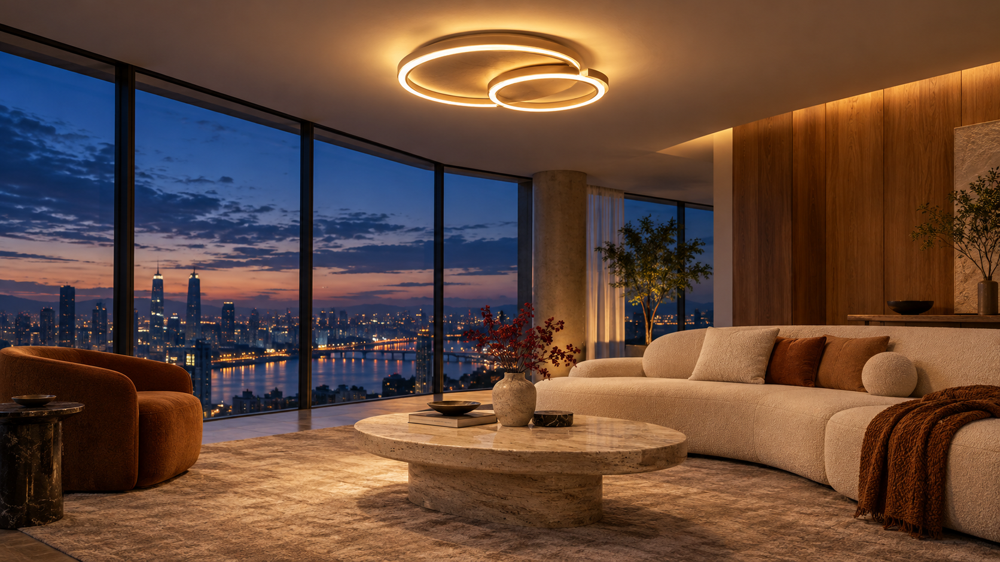

当前判断主链已经接通，
关键操作还需闭环。
分镜、画布、资产与生成引擎已有基础。接下来要让输入被准确消费、结果可检查、局部可修改、成片可可靠交付。

原创示例素材 · 不是新生成结果- 剧本与参考
- 分镜规划
- 首帧确认
- 逐镜生成
- 核验交付
按能力看距离
不以按钮数量估算完成百分比
基础骨架入口、画布、分镜、作品
已有对应实现。旧报告中的检查器、分镜、导入入口缺失不应重新立项。
查看入口 →
交互待闭环参考、确认、失败恢复
参考消费、助手隔离、首帧可见与成片出口需要实测修复。详见审计 F1–F10。
查看确认 →
新能力像素编辑与主体库
需要工作流、数据语义与交互共同落地。自然语言派生不能替代区域编辑。
查看编辑 →
待对照验证画质、速度、稳定性
尚无同素材、同目标的即梦 A/B 评测；不据截图宣称模型效果追平。
查看证据 →
沿用已定范围
单用户私有部署；不加入会员积分、公开社区或协作房间。图片模型可替换，未接通的能力明确停用。优先级、进度与 AC 继续由 PLAN 维护。
目标交互示意演示操作 · 不调用模型
灯具品牌 / 蓝调客厅 · 同一份创作
把想法说清楚，再把画面摆出来。
对话梳理剧本，画布安排素材。切换入口保留文字与参考。
查看对话布局示意
用这组灯具与空间参考，规划三镜短片。
Astrmira · 方案示意空间全景 → 灯具细节 → 阅读角。先核对每份参考的用途，再确认分镜；应用方案只写草稿。
查看状态
费用待核算
规划会调用文本模型；确认并启动后才提交媒体生成。所有卡片仅为布局示例。
实现关注点提示词、参考用途与参数在同一处完成；切换模式保留输入。模型无法消费的参考组合明确提示，不能静默舍弃。
可拖动交互示意拖动媒体卡 · 白线实时跟随 · 方向键微调
输入素材
首帧定妆正在编辑：镜头 01 · 首帧草稿
图片 · 单参考
视频镜头
细白实线：已绑定来源 / 灰白虚线：计划依赖节点拖动、缩放与切换均不触发生成
选中连线查看来源与用途；连线本身不证明模型已消费。
轻连线，清楚的关系默认无箭头、无常驻标签；悬停或键盘聚焦才强调关系。当前演示实时更新连线端点，支持缩放、滚动和卡片拖动；生产实现复用 XYFlow，保存、撤销和循环依赖保护另行验收。
规划中的交互示意真实模板接通后才能开放
原图预览 · 未生成超分结果
新产物 · 保留原图智能超清
选择放大倍率，提交前显示目标尺寸与模型能力。
该工具尚未接通，不能提交生成。
查看真实接线验收标准 → 原图、区域、结果分清楚扩图明确新增画幅与原图位置；重绘明确遮罩区域与未遮罩区域的保持策略；超清显示真实输出尺寸。操作名本身不能代替模型能力。
规划中的交互示意N9 未拍板 · 单主体方案仅作推荐
让同一个主体，进入下一幅画面。
一次定妆，保存名称、参考与版本；使用时看得见它将参与哪一步。
引用前核对
尚未选择主体
建议：主体参考先用于首张定妆图；后续镜头继承该定妆产物。这个语义必须先完成 N9 决策和契约。
查看 N9 选项 →目标交互示意三张卡复用同一素材，非生成分镜
3 张首帧可检查；视频尚未启动。这是目标界面演示。
SHOT 01 / 2s空间全景
可检查 · 示例 v1
SHOT 02 / 2s灯具细节
可检查 · 示例 v1
SHOT 03 / 2s阅读角落
可检查 · 示例 v1
锚点重出需要说明影响如果镜头 01 是后镜的定妆锚点，重出后须提示已有后镜仍引用旧版本。是否批量重出由 N10 决定，不能自动消耗算力。
目标交付页示意静态封面 · 本页没有可播放成片
视频播放器位置示意
01 空间全景02 灯具细节03 阅读角落
蓝调客厅灯具短片
项目：蓝调客厅 / 媒体事实以实际产物探测为准
拿走成片之前先核对交付事实
- 每个镜头恰好出现一次
- 时长符合素材与转场
- 尺寸、帧率、音轨如实
- 成片与镜头归属同一项目
- 媒体可解码、可下载
真实审计 F10三段源片各 2.04 秒，实测拼接成片为 8.17 秒：首镜重复。成功状态与文件可取不能替代内容验收。
查看原始审计 →